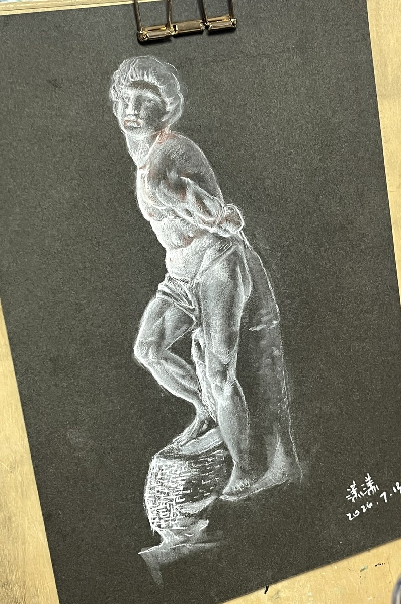
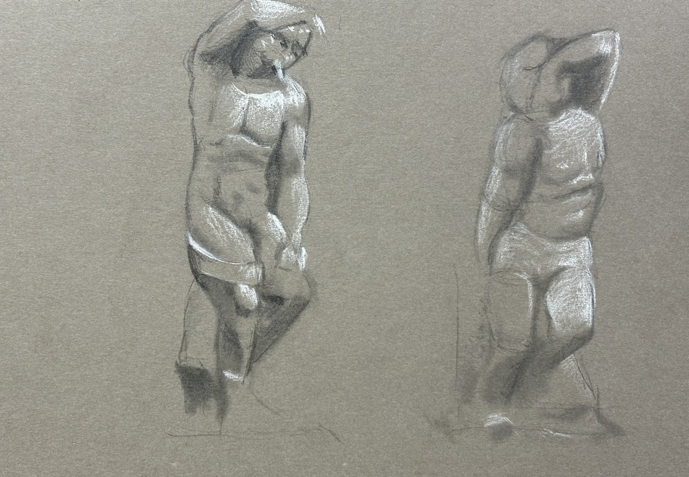
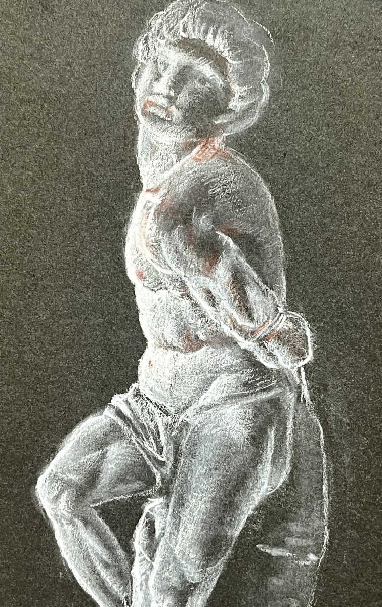

审美自觉
她开始主动辨认大师速写中的取舍、节制和姿态概括，并把这种判断转化为更稳定的学习路径。

她在导师课中以萨金特大师人物速写的分析与拆解为起点，并结合灰卡纸、高光笔和雕塑临研，发展线条节制、结构、光感与形式语言。
潇潇的成长重点，是从萨金特人物速写的分析与拆解，进入线、面、光和体积共同组织的形式语言。
她开始主动辨认大师速写中的取舍、节制和姿态概括，并把这种判断转化为更稳定的学习路径。
灰卡纸与高光笔让她更敏锐地判断亮部、暗部和中间调之间的结构关系。
作为云叠室庐主理人，她的图像训练也保留着一条关于山野空间、材料气质和生活方式的成长记忆。
这组图像展示潇潇导师课中的阶段材料，用于呈现结构、光感和体积判断逐渐清晰的过程。


这一节保存的是一次发生在潇潇山野设计酒店中的项目记忆：KART 在云叠室庐完成《烟云供养》与《水墨讲稿｜云叠室庐》的相关内容。

云叠室庐是一处面向山水、云海与当代文人生活的山野设计酒店，也成为潇潇成长卷宗中的一处真实场域。
项目资料中记录，云叠室庐曾获得美国室内设计年度 Best of Year 2025 相关奖项。对本页而言，它既是一处值得被看见的山野设计酒店，也是一份和潇潇个人成长相连的记忆：她在学习如何观看形体，也在积累作为空间主理人所需要的审美判断。
进入云叠室庐项目记忆KART 以美术馆的方式保存一个人的变化：不是急着包装结果，而是让判断力的形成过程被看见。
这一阶段值得被保存的是：她已经开始把视觉直觉转化为有结构的审美判断。
从萨金特人物速写的分析与拆解，到灰卡纸上的光感与体积，她正在把大师图像中的线条节制和姿态判断转化为自己的形式语言。下一阶段最值得继续观察的，是这些训练如何慢慢回到她自己的空间、生活和创作表达里。